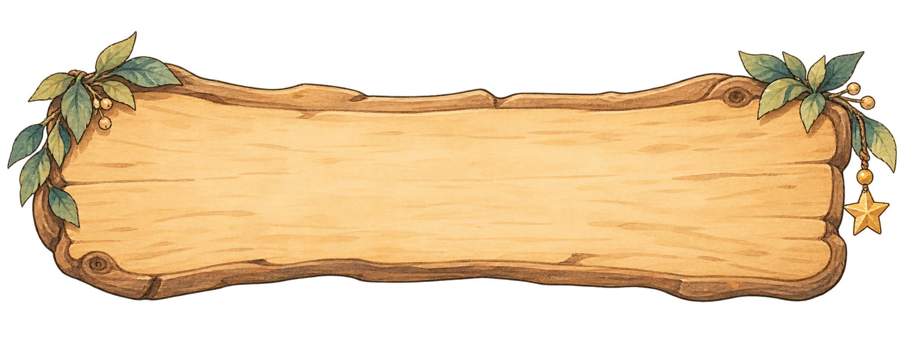
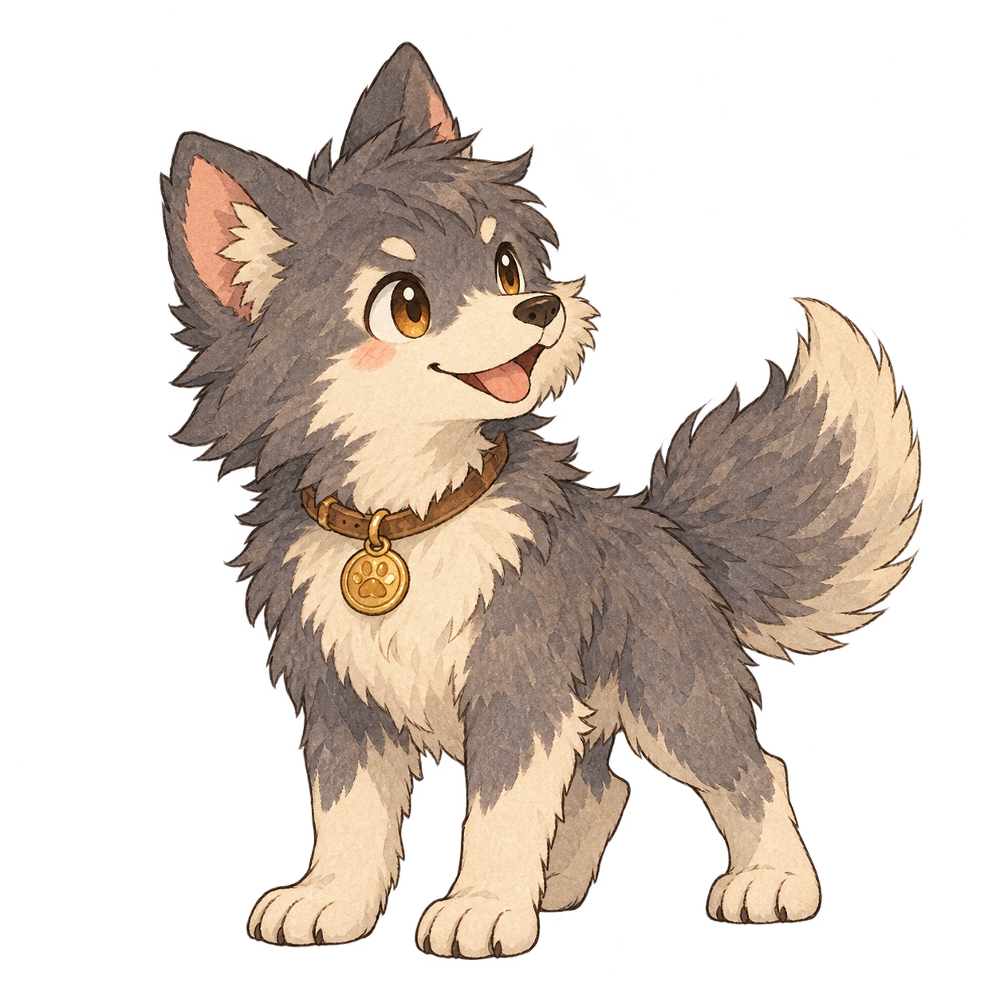

THE CIRCLEWOOD CHRONICLES
勇者試煉圓周長的魔法之旅
準備出發
帶上你的智慧，走進圓之森。
圓之森・試煉入口五道試煉，等待勇者
森林野狼120 / 120

勇者試煉把公式，化為勇氣。
知識就是魔法
VS
森林的守門員
冒險邀請函準備好，
準備好，
用數學施展魔法？
在圓之森裡，每一個正確答案，
都是保護自己的力量。
- 01讀題，選一個答案
答對施法，並獲得 12 枚金幣。
- 02慢慢想，沒有時間限制
答錯會扣 HP，並顯示正解與算式。
- 03五關，30 道原題
每關後到商店補給，迎接下一場試煉。
初始 HP 100・不計時・可隨時查看公式
圓周率一律用 π 表示，不用換成 3.14。
需要一點提示？查看公式
先找出「已知什麼」，再看「要求什麼」。
你的冒險地圖尚未開始・共 30 題